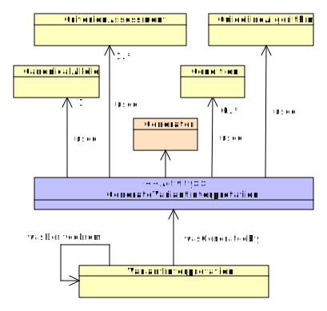

GenerateVariantInterpretation
*TODO* A short description about generate variant interpretation activity.
Descended from Activity
Scope and Usage
The GenerateVariantInterpretation activity represents the process of combining CriterionAssessments and producing an interpretation. In other words, this activity involves weighing the different lines of evidence represented by the possibly conflicting CriterionAssessments and combining them into a single statement. In the context of the ACMG Pathogenicity guidelines, this combination can be calculated algorithmically; the assessor in this case may be a computational agent such as the ClinGen Pathogenicity Calculator.
Attributes
| Name | Type | Cardinality | Description |
|---|---|---|---|
| assertionMethod | AssertionMethod | 0..1 | |
| criterionAssessments | CriterionAssessment | 0..* | |
| condition | Condition | 1..1 | |
| variant | CanonicalAllele | 1..1 |
Inherited Attributes
| Name | Type | Cardinality | Inherited From | Description |
|---|---|---|---|---|
| activityEntityId | Entity | 1..1 | Activity | |
| startedAtTime | Datetime | 0..1 | Activity | A human-readable description of the reasoning behind the interpretation |
| endedAtTime | Datetime | 0..1 | Activity | |
| wasAssociatedWith | Agent | 0..* | Activity | The Agent that performed the Activity |